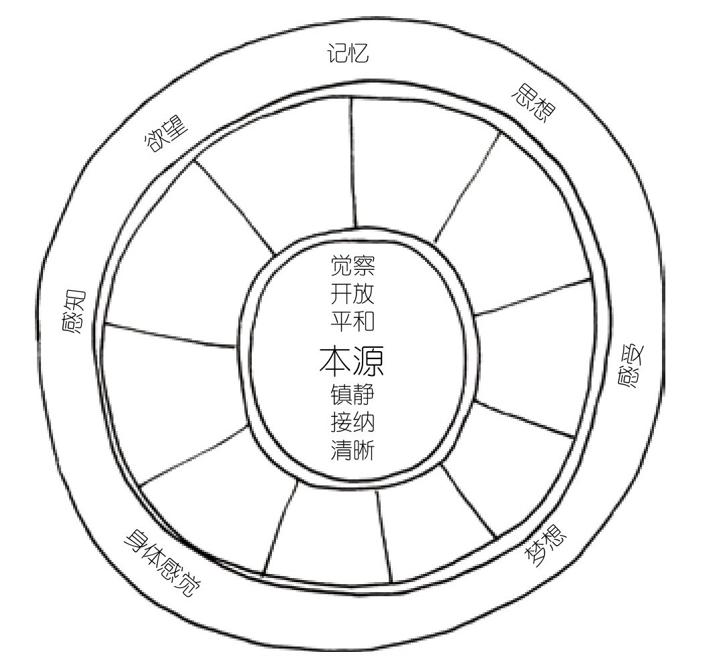
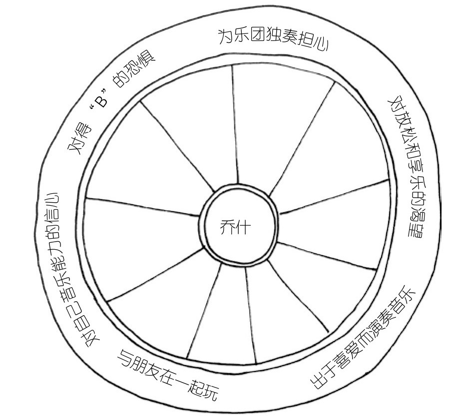
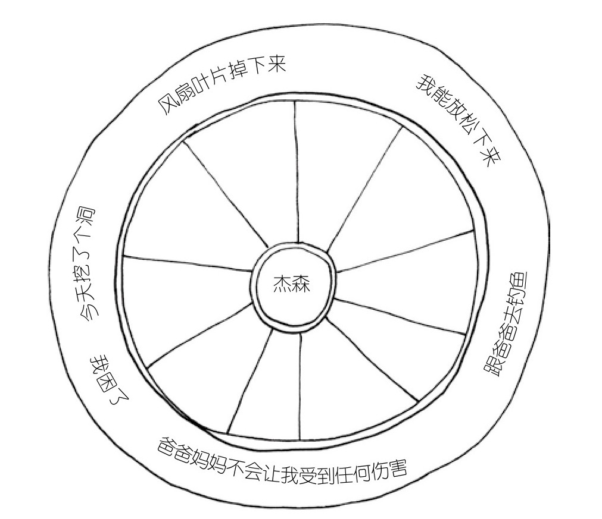

05a · 你有一个轮子，你不在轮子的边上
04b 结尾我们说过，这一章要走进全书最核心的模型。西格尔把它放在第五章——前面四章分别整合了左右脑、上下脑和记忆，那些都是大脑的不同区域或不同时间的信息。这一章升级了：他不讲区域了，他讲视角。
你对自己内心的视角。
第七感：一个你不知道自己有的感官
西格尔发明了一个词叫"第七感"（Mindsight）。前五个感官你知道——视听嗅味触。第六感是直觉。第七感是看见自己内心的能力。
不是比喻。西格尔说，第七感有两个基本功能：了解自己的心理，了解他人的心理。这一章聚焦第一个——了解你自己的内心。下一章会讲第二个——了解他人、建立关系。
为什么了解自己的内心是需要学的事？因为你大部分时候并不在"看"自己的内心。你在被内心推着走。
孩子扯了妈妈头发，你瞬间暴怒。你当时在"看"自己的愤怒吗？没有。你就是那个愤怒。它裹住了你的整个觉知——在那一刻，除了愤怒什么都没有。
这就是没有第七感的状态。
觉知之轮：全书最重要的一个模型
西格尔画了一个模型，叫觉知之轮（The Wheel of Awareness）。全书六个章节，这个模型是枢纽。

一个自行车车轮。
中心叫"本源"——你觉察的那个位置。是你在看。
外围是你觉察到的一切——念头、感受、记忆、身体感觉、对外部世界的感知。
在你没有觉知之轮这个概念之前，你的体验是这样的：愤怒来了 → 你是愤怒。焦虑来了 → 你是焦虑。孩子不肯睡觉、你累了一整天、他第三次从床上爬起来——你炸了。你不是"注意到自己很愤怒"。你就是那个愤怒。它占据了你觉知之轮的全部外围，你坐在里面出不来。
但如果你知道：愤怒只是外围上的一个点。它不是你。它只是你此刻注意到的一个东西。
你是那个注意到愤怒的人。你在轮子的中心。你可以选择看向别处。
这不是鸡汤。这是神经科学——我们待会讲。但先把这个轮子的结构看清楚。
轮子怎么转：乔什的故事
11 岁的乔什什么都做得很好——学业、运动、音乐、社交。但他内心有一个声音从来没停过："我还不够好。"一次投篮失误，一顿自责。午餐盒落在学校，怀疑自己是不是太蠢了。
乔什的父亲在他婴儿时期就离开了。他内隐记忆里有一道公式：不完美 = 被抛弃。所以他对任何错误都过度反应。
蒂娜给他画了一个觉知之轮。

她让他看见：那些"我不够好"的念头、考试得B的恐惧、独奏时忘谱的担忧、胃打结的感觉、肩膀紧绷——这些东西全在外围。它们确实存在。它们不假。但它们只是他觉知之轮外围上的一小簇点。不是整个轮子。
在他的轮子外围上，还有别的东西：他对音乐的热爱、他的天资、他放学后跟朋友疯玩的快乐、他不必每一场都当得分王的信念。
这些东西也真实存在。只是他从来不看它们。
乔什的突破不是"消除了自我怀疑"。是他第一次发现：他可以选择注意力放在哪里。 他可以回归本源——那个能看见一切的位置——然后有意识地决定：我现在要把焦点从"不能犯错"移到"我喜欢吹萨克斯"。
轮子卡住的时候：杰森的故事
6 岁的杰森每天晚上不敢睡觉。他卧室天花板上的吊扇——他看着它，脑子里只有一个画面：螺丝松了，扇叶掉下来，把他和他的床切成碎片。
父母跟他解释过无数次：风扇装得很牢，你在床上很安全。没用。上层大脑的逻辑（风扇不会掉）一下线，下层大脑的恐惧（它在转！它会掉！）就接管了一切。
杰森的觉知之轮上只剩一个点：对风扇的恐惧。其他所有外围面向——父母会保护他、白天在院子里挖大坑的快乐、他其实喜欢自己的房间——全被恐惧的强光遮住了。

他父母教了他两件事。
第一，识别信号。 当他胸口的焦虑感开始冒、手臂和脸开始紧绷——那是恐惧念头正在占据外围的早期信号。注意到它，而不是被它吞掉。
第二，转移焦点。 回到本源，看向别的外围面向。他喜欢跟爸爸钓鱼。他闭上眼睛，想象自己坐在船上，水面很安静。
这不是"别想了"——那没用。这是"你还有别的东西可以想"。恐惧还在外围上，但它不再是你看到的唯一的东西。
杰森没有拆掉吊扇。他学会了转移注意力。一个 6 岁的小孩，用一张轮子的图，赢得了对自己内心的控制权。
"我感到"和"我是"——一个字的距离
觉知之轮澄清了一个孩子（和成人）最常犯的错误：把暂时的感受当成永久的身份。
一个小学一年级的女孩做作业卡住了。她很沮丧。如果没有人帮她整合，她会说："我太笨了。作业太难了。我永远也做不好。"
不是"我感到沮丧"——是"我很笨"。
不是"我现在做不出来"——是"我永远做不好"。
西格尔说，这就是孩子把觉知之轮外围上的一个点当成了整个轮子。一种暂时的心理状态被感知为一种永久的自我特质。他在那一刻就是那个沮丧，不知道还有一个"注意到沮丧的我"在中心。
如果父母帮她看见：你现在感到沮丧——这是真的。但你昨天做完了类似的作业，那也是真的。你现在卡住了——这是外围上的一个点。你聪明、你通常能搞定——那是外围上的其他点。
不是否定她的感受。是让她看见整个轮子。
你两岁的孩子现在还说不清"我感到"和"我是"——他连主语都用不太利索。但他已经在体验这个区别了。你注意到没有，你在 04 章 Q3 里写过——"开心的时候就很开心，不开心的时候就很不开心。"这就是一个 2 岁小孩的觉知之轮：轮子小，一次只能装一个外围面向。开心来了，整个轮子都是开心。不开心来了，瞬间翻盘。
每次你帮他把"说不清楚的那种不舒服"变成"你感到很生气，对吗"，你就是在帮一个 2 岁的小孩画他人生的第一张觉知之轮。
为什么转移注意力不只是"想开点"——专注的力量
你可能会想：把注意力从恐惧移到钓鱼上——这不就是"想开点"吗？
不是。因为你关注什么，你的大脑就变成什么。
这是神经可塑性的核心原理。当一个神经元被激活（你关注了一件事），它会"开火"。开火导致蛋白质产生，蛋白质在被激活的神经元之间制造新的连接。用西格尔的话说："神经元一齐开火，一齐串联。"
小提琴手的大脑扫描显示，他们代表左手手指的皮质层显著增大——因为左手需要精确、快速地按弦。出租车司机的海马体比普通人更发达——海马体负责空间记忆。动物实验里，靠听觉捕猎的动物听觉中心更大，靠视觉捕猎的动物视觉中心更大。
注意力指向哪里，神经元就在哪里建立连接。 这不是比喻。这是物理变化。
所以杰森的"把注意力从风扇移到钓鱼"不是逃避。他每一次转移注意力，他的大脑就在物理上削弱"恐惧→风扇"的回路，强化"平静→钓鱼"的回路。练习形成了技能。一种状态逐渐成为一个特质——一个更好的特质。
对你的意义：你之前说的那 4 到 5 分钟平复期——"被孩子触发后需要 4 到 5 分钟平复"。在那几分钟里，你的大脑在做的事就是：把注意力从外围上那个"暴怒"的点上拨开，慢慢回到本源——回到那个能看见一切的位置。每一次你做到了，你大脑里那条"触发→暴怒"的回路就弱了一点点，"触发→觉察→呼吸→选择"的回路就强了一点点。不是意志力。是神经可塑性。
整合你自己
西格尔在每一章结尾都有一节叫"整合我们自己"。这一章的这一节可能是全书对父母最实用的一段。
他让你做一个实验。回想上一次你对孩子暴怒的场景。孩子不肯配合、你累了一天、他第三次挑战你的耐心——你炸了。在那一个瞬间，你的觉知之轮发生了什么？
愤怒烧遍了整个外围。所有其他面向——你 5 分钟前还跟他笑到抽筋、你上周发誓再也不掐他胳膊、他只是一个普通的 4 岁小孩——全被愤怒的光遮住了。你从本源被拉到了外围。你不是"看着愤怒的人"。你变成了愤怒。
西格尔说，这个时候你能做的只有一件事：回到本源。
怎么回？关注呼吸。就这一步。不是"冷静下来"——你冷不下来。是把注意力放到呼吸上。空气从鼻子进出。胸腔的起伏。肚子的起伏。
一旦你把注意力从外围那个暴怒的点上拨开——哪怕只拨开一秒钟——你就回到了本源。然后你可以：喝一口水。歇一分钟。伸个懒腰。然后重新选择回应的方式。
这跟纵容孩子没有任何关系。你仍然要设置边界。你仍然要纠正行为。但你是从本源做出的决定——不是被外围的愤怒劫持之后的反应。
你之前在 03 章写过，被触发后需要 4 到 5 分钟平复。那就是你从外围回到本源所需的时间。觉知之轮没有缩短这个时间——但它给了这个过程一个名字。下一次你发现自己在那几分钟里的时候，你不再只是一个"在努力冷静的人"。你是一个"正在从外围回到本源的觉察者"。你知道正在发生什么。知道本身——就是第七感在工作。
下一篇，西格尔给出三个具体的方法，把觉知之轮变成每天能用的工具：浮云原理（教孩子感受是暂时的）、情绪调色板（教孩子识别情绪的丰富性）和第七感练习（教孩子通过呼吸回到本源）。觉知之轮是地图，这三个方法是走路。
学习反馈
在飞书中回复本条消息，填写你的答复。